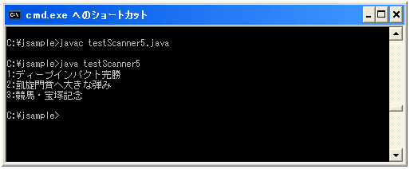

- Home ›
- Java入門 ›
- Scannerクラス
ファイルから入力
Scannerクラスはファイルの中身を読み込むこともできます。今まではキーボードから入力された値を読み取っていましたが、キーボードから入力してもらう代わりにファイルを指定し、そのファイルに書かれている内容を読み込むということになります。
ファイルからの入力を行う場合のコンストラクタは下記になります。
Scanner public Scanner(File source) throws FileNotFoundException
指定されたファイルからスキャンされた値を生成する Scanner を新しく作成します。ファイルから 取得したバイトは、基になるプラットフォームのデフォルト文字セットを使用して文字に変換され ます。 パラメータ: source - スキャン対象のファイル 例外: FileNotFoundException - ソースが見つからない場合
引数に読み込む対象のファイルから作成したFileクラスのオブジェクトを指定します。例えば下記のような感じです。(例外処理も必要です)。
try{
File file = new File("targetfile.txt");
Scanner scan = new Scanner(file);
}catch(FileNotFoundException e){
System.out.println(e);
}
Scannerクラスのオブジェクトを作成した後の使い方はキーボードから入力した場合と同じです。
ただファイルから読み込むと言う場合は、何個のトークンを読み込むと決まっているよりも、ファイルに書かれている文だけ読み込むという場合が多いと思います。このようにまだデータがあるなら読み込むといった処理を行うにはScannerクラスで用意されている"hasnext"メソッドを使います。
hasNext public boolean hasNext()
このスキャナが入力内に別のトークンを保持する場合は true を返します。このメソッドは、入力の スキャンの待機中にブロックを実行する可能性があります。スキャナが、入力の先に進むことはあり ません。 戻り値: このスキャナが別のトークンを保持する場合にのみ true 例外: IllegalStateException - このスキャナがクローズしている場合
このメソッドを使う場合、"next"メソッドで読み込めるデータが残っているのかどうかを判別してくれます。
例えば区切り文字を改行に設定し、ファイルに含まれているデータを1行ずつ最後まで読み込む場合には下記のようになります。
try{
File file = new File("targetfile.txt");
Scanner scan = new Scanner(file);
scan.useDelimiter("\\r\\n");
int line = 1;
while(scan.hasNext()){
String str = scan.next();
System.out.println(line + ":" + str);
line++;
}
}catch(FileNotFoundException e){
System.out.println(e);
}
上記では1行ずつ読み込み、読み込んだ値に行番号を付与して画面に出力しています。
また"next"メソッドではなく、"nextInt"メソッドなどで読み込む場合には、それに対応した"hasNextInt"メソッドなど型毎に類似のメソッドが用意されていますが、あまり使うことは無いのではと思います。
サンプルプログラム
では実際に試してみましょう。
import java.util.Scanner;
import java.io.FileNotFoundException;
import java.io.File;
class testScanner5{
public static void main(String args[]){
try{
File file = new File("targetfile.txt");
Scanner scan = new Scanner(file);
scan.useDelimiter("\\r\\n");
int line = 1;
while(scan.hasNext()){
String str = scan.next();
System.out.println(line + ":" + str);
line++;
}
}catch(FileNotFoundException e){
System.out.println(e);
}
}
}
上記を実行する前に、"targetfile.txt"というテキストファイルを別途用意して、今回のサンプルプログラムと同じディレクトリに置いておきます。このファイルには適当な3行のテキストを入力しておきました。
上記を実際にコンパイルして実行してみると下記のようになります。

( Written by Tatsuo Ikura )

著者 / TATSUO IKURA
初心者～中級者の方を対象としたプログラミング方法や開発環境の構築の解説を行うサイトの運営を行っています。